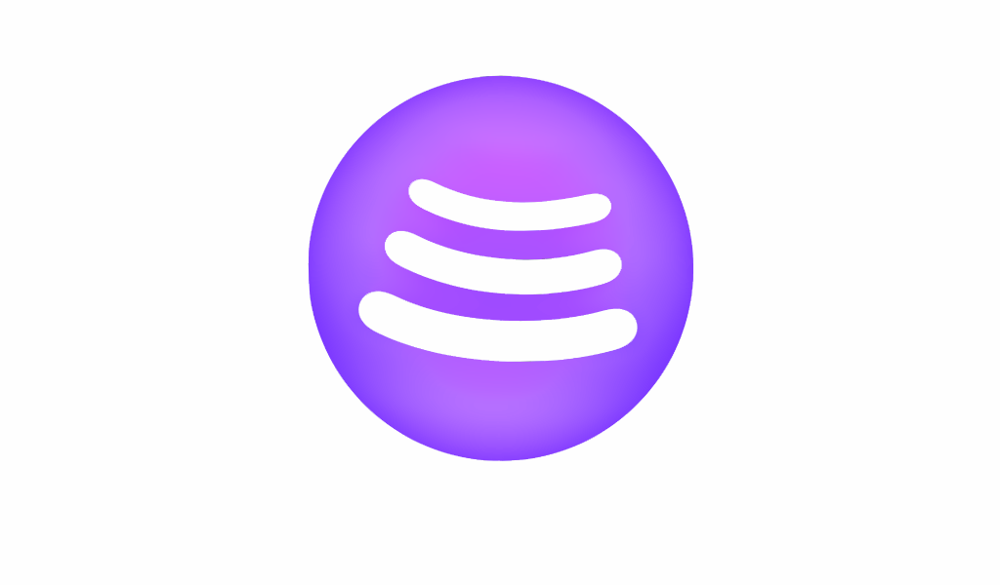

Home
About
Developers
Sign up
KOS Studio About

Our Project here is to help keep those who are looking for music to listen to entertained. This is still a work in progress! We're always trying to find ways to help update our system and improve our terms of use. Here in KOS Studio you can create your own playlists free of cost and you can easily add more of your new favoring songs to your play list! :D The only time you need to pay, is to access the songs which are not free for the public use! for example (non royaly free songs)